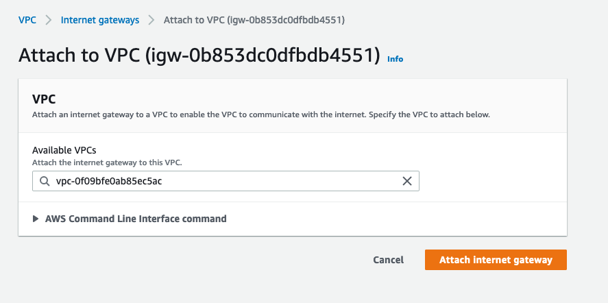

AWS Chatwoot deployment guide
The following is reference HA architecture guide for deploying Chatwoot on AWS. For a cloud native deployment, use our helm charts with AWS Elastic Kubernetes Service(EKS).
Introduction
We will use the linux installation script to get a chatwoot instance up and running. Also instead of relying on redis, postgres and nginx installed in the same ec2, we will proceed to make use of managed aws services for the same viz Elasticache, RDS and ALB.
Prerequisites
- AWS account
- Domain to use with Chatwoot
Architecture
This guide will follow a standard 3-tier architecture on aws.
Network
Create VPC
- Sign into AWS console and pick the region you are going to deploy.
- Navigate to the VPC console and create a new vpc for chatwoot. At the
nametag, enterchatwoot-vpcand use the CIDR block10.0.0.0/16. - Leave the rest of the options as default and click on
Create VPC.
Subnets
Create two public and private subnets in the vpc we created. Make sure to have then in different AZ's and have non-overlapping CIDR ranges.
Navigate to VPC > Subnets.
Click on
Create Subnet. Select thechatwoot-vpcwe created before, name it aschatwoot-public-1, select an availability zone (for example, ap-south-1a) and the CIDR block as10.0.0.0/24.Follow the same to create the remaining subnets.
| Name | Type | Availability Zone | CIDR Block |
|---|---|---|---|
chatwoot-public-1 | public | ap-south-1a | 10.0.0.0/24 |
chatwoot-public-2 | public | ap-south-1b | 10.0.1.0/24 |
chatwoot-private-1 | private | ap-south-1a | 10.0.2.0/24 |
chatwoot-private-2 | private | ap-south-1b | 10.0.3.0/24 |
- After creating all subnets, enable
auto assign public ipv4 addressfor public subnets underActions>Subnet Settings.
Internet Gateway
- Select
Create Internet Gateway, name it aschatwoot-igwand click create. - Select it from the internet gateways list, choose actions and then select
Attach to VPC. - Choose
chatwoot-vpcand click attach.

NAT Gateway
Chatwoot app servers will be deployed in the private subnet. For them to access internet, we need to add NAT gateways to our public subnet and add a route from the private subnets.
Navigate the VPC dashboard and select
NAT gateways.Click
Create NAT Gateway.- Name it as
chatwoot-nat-1. - Select the
chatwoot-public-1subnet. - Click on
Allocate Elastic IP. - Add additional tags as per your need.
- Click
Create NAT gateway.
- Name it as

- Follow the same to create a second NAT gateway (
chatwoot-nat-2) and choose thechatwoot-public-2subnet.
Route tables
Route table controls the inbound and outbound access for a subnet.
Public Route table
We will create route tables so that our public subnets can reach the internet via the Internet gateway.
Navigate to the VPC dashboard and select Route Tables.
- Click
Create route table. - Use the name
chatwoot-public-rtand choose thechatwoot-vpcunder VPC. - Click
Create.
Next, we need to add a route to the internet gateway we created earlier(chatwoot-igw).
- Select the
chatwoot-public-rtroute table from the list and click onEdit routes>Add Route. - Set the destination as
0.0.0.0/0and choose the target aschatwoot-igw. Click onSave Changes.
Also,
- Select the
chatwoot-public-rtroute table from the list and click onSubnet Associations>Edit subnet associations. - Select both the public subnets(
chatwoot-public-1,chatwoot-public-2) and clicksave.
Private Route table
We will also create private route tables so that our private subnets can reach the internet via the NAT gateways.
- Follow the above guide and create two private route tables namely,
chatwoot-private-aandchatwoot-private-b. - Select the route tables one by one and add a route to the NAT gateway in their respective availability zone.
- For
chatwoot-private-a, add a route to0.0.0.0/0and target aschatwoot-nat-1. - For
chatwoot-private-b, add a route to0.0.0.0/0and target aschatwoot-nat-2.
- For
Also,
- Associate the private route tables with corresponding private subnets.
- For
chatwoot-private-a, associatechatwoot-private-1subnet. - For
chatwoot-private-b, associatechatwoot-private-2subnet.
- For
Application Load Balancer (ALB)
Create an application load balancer to recieve traffic on port 80 and 443, and distribute it across Chatwoot instances.
- Navigate to the EC2 section and choose Load Balancer section.
- Click
Create Load Balancer.- Choose
Application Load Balancer. - For the loadbalancer name, use
chatwoot-loadbalancer. - Select the scheme as
internet-facingand IP address type asIPv4. - For the network mapping section,
- Select the
chatwoot-vpc. - Select both the public subnets
chatwoot-public-1andchatwoot-public-2under mapping section.
- Select the
- For the Security group section,
- Create a new security group,
chatwoot-loadbalancer-sg. - Add rules to allow HTTP and HTTPS traffic from anywhere(
0.0.0.0/0,::/0). - Also add rules to allow SSH traffic.
- Create a new security group,
- For Listeners and routing section, create two listeners for both 80 and 443.
- Also create a target group,
chatwoot-tgthat will forward the requests to port3000(Chatwoot listens on this port). - Add a health check to the endpoint
/api. This endpoint is not authenticated and should return the application version.
- Also create a target group,
- Choose
{
"version": "1.22.1",
"timestamp": "2021-12-06 16:07:39"
}
- Add any necessary tags and click create.
Also, add if you have your domain on Route53 and use ACM to generate a certifcate to use with ALB.
//TODO: expand more on the ACM part
Postgresql using AWS RDS
//TODO: expand rds section
Chatwoot uses Postgres as a DB layer and we will make use of Amazon RDS with a multi AZ option for reliablity.
RDS security group
- Navigate to EC2 > Security groups and create a new sg.
- Name it,
chatwoot-rds-sg. - Select the
chatwoot-vpcand add an inbound rule for postgres port with sourcechatwoot-loadbalancer-sg.
RDS subnet group
- Navigate to RDS section and select subnet groups.
- Create
chatwoot-rds-groupand choosechatwoot-vpc. - Select both az's and the private subnets.
RDS
- Select create database.
- Use standard create and choose the postgres engine.
- Use the production template, create a postgres master username and password.
- Enable Multi-AZ deployment.
- Select
chatwoot-vpcand selecte the rds security group we created earlier. - Enable password authentication.
- Click create.
- After the create is complete, note down the hostname, username and password. We will need this to configure Chatwoot.
Redis using AWS Elasticache
//TODO: expand redis section
- Follow similar steps like the rds to create a redis security group and subnet group.
- Create the redis cluster with multi-AZ option.
Creating Bastion servers
Create bastion servers in both public subnets. These servers will be used to ssh into chatwoots servers in private subnets.
- Navigate to EC2 dashboard and click launch instance.
- Use an
Ubuntu 20.04 imagewith at3.microtype. - Choose
chatwoot-vpcand subnetchatwoot-public-1. - Name it as
chatwoot-bastion-a. - Add a new sg,
chatwoot-bastion-sgand enable ssh access from anywhere. - Leave the rest as defaults and click launch.
- Once the instance is up, try to SSH into the instance.
Repeat the same and create another bastion, chatwoot-bastion-b in the other AZ.
Install Chatwoot
- Navigate to EC2 section, and click on launch instance.
- Use an
Ubuntu 20.04 imagewith ac5.xlargeinstance type. - Choose the chatwoot-vpc and select the private subnet
chatwoot-private-1. - Disable auto assign public IP and increase the storage of root vo lume to 60 GB.
- Add necessary tags. Set the
Nametag tochatwoot. - Select the loadbalancer security group and click launch.
- SSH into the bastion server and from there, ssh to the chatwoot instance we created.
- Switch to
rootuser. - Download the chatwoot linux installation script.
wget https://raw.githubusercontent.com/chatwoot/chatwoot/master/deployment/setup_20.04.sh -O setup.sh
chmod 755 setup.sh
- Modify it remove the postgres, redis, letsencrypt and nginx section.
vi setup.sh
Run the script.
./setup.sh master
Configure Chatwoot
// TODO: Expand with S3 for active storage and SES for Email.
- Once the installation is complete, switch to the chatwoot user and navigate to the chatwoot folder. Edit the .env file and replace the postgres and redis credentials with RDS and elasticache values.
sudo -i -u chatwoot
cd chatwoot
vi .env
- Run the db migration.
RAILS_ENV=production bundle exec rake db:prepare
- Also modify the other necessary environment variable for your chatwoot setup. Refer to https://www.chatwoot.com/docs/self-hosted/deployment/linux-vm#configure-the-required-environment-variables
Verify login
- Add this instance to the target group attached to the alb.
- Navigate to the your chatwoot domain to see if everything is working.
Create custom AMI
- If you are getting the onboarding page, complete the sign up and verify the installation.
- Voila !! Your chatwoot instance is up.
- If everything looks good, proceed to create an ami from this instance and name it as
chatwoot-base-ami.
Auto Scaling Groups (ASG)
- Create a launch configuration using the above base image.
- Proceed to create an auto-scaling group from this launch config.
- Set the minimum and desired capcity to 2 and maximum to 4. Modify this as per your requirement.
- Create a scaling policy based on the CPU Utlization.
- At this point, we are good to terminate the instance we created earlier.
- Check the loadbalancer or target-group to verify if two new chatwoot instances have come up.
- That's it.
Monitoring
Updating Chatwoot
- Login to one of the application servers and complete the update instructions. Run migrations if needed. Refer to https://www.chatwoot.com/docs/self-hosted/deployment/linux-vm#upgrading-to-a-newer-version-of-chatwoot
- Create a new ami and update the launch config.
Conclusion
This is a reference guideline to have an HA chatwoot architecture on AWS. Modify or build upon this to suit your requirements.